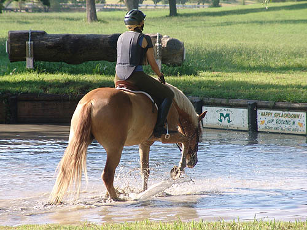

Mo Schooling at Greenwood I've just been doing trail rides and some
dressage work
with Mo this summer, so I took him for
a cross country school
to see what he remembered of jumping.
He's definitely got it figured
out. We had fun out on the course this
weekend.
Warm up was great. We'd taken a dressage
lesson this week. Starting out we didn't have a steady head (especially
in the transitions). By the end of the lesson he was trusting my hands
and consistent with his head. This day my photographer mentioned that his
head was noticably steady.
He had a sore mouth from the happy
mouth bit we'd been using, so I switched back to the Boucher.
I did have to remember to push him
forward if he thought about getting behind the bit. He's pretty sensitive
in the mouth and needs a light hand.
No softening at the canter yet, but
my trainer says I need to start asking on a regular basis. He doesn't get
fussy about my requests, and I know that eventually he'll start giving
me the right response.
He was nicely balanced heading toward
his fences.
Our first jump was a bank. I thought
he'd just hop up, but he moved right into jumping.
When I'm thinking of other things
my elbows go where they're not supposed to.
With this jump, I knew we were
going to have a good day. He was eager and foward and having fun.
We played on the hillside and he remembered
how to balance.
He just attacked the jumps.
Mostly it was nice and smooth and right in the canter stride. Here he did
take off a little earlier than I planned, but he probably picked a better
spot than the one I was thinking about....
This was a little bigger jump to take,
but my trainer thought Mo was going good and wouldn't have any trouble
(he was right).

There was a group at the water, so
we just splashed through and continued on with the rest of the course.
Water's never been a concern for Mo.
My photographer wanted to see
us take the Novice version of this, but Mo was doing so good that we just
had fun over the BN version and kept him feeling confident.
I can't wait to try him over stadium
jumps again. Before he was sloppy if they weren't substantial, but I think
today he learned how much fun jumping is.
Another down bank. He just goes where
he's pointed.
This was a fun last jump. He pulled
us toward it, took it as a canter stride and kept on going looking for
another fence.